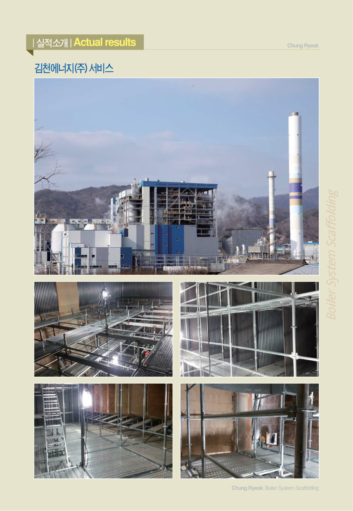
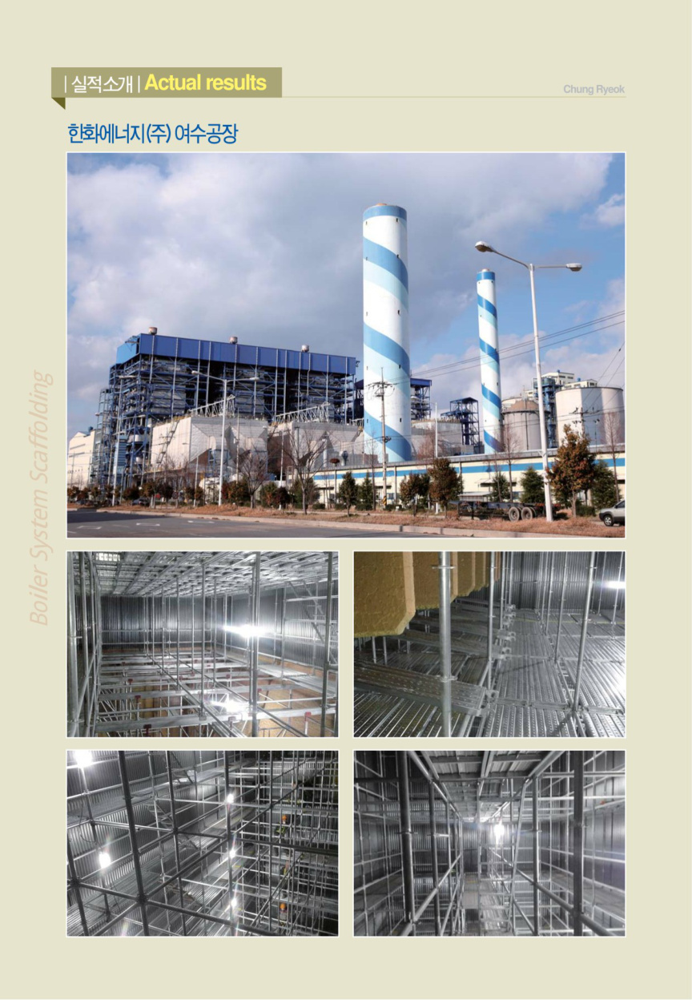
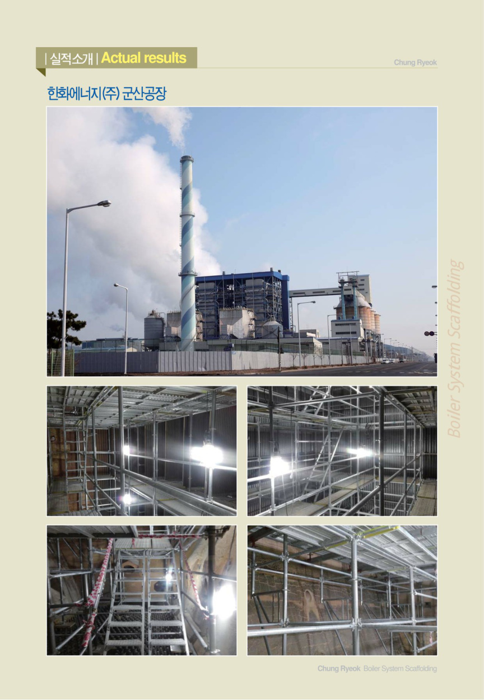
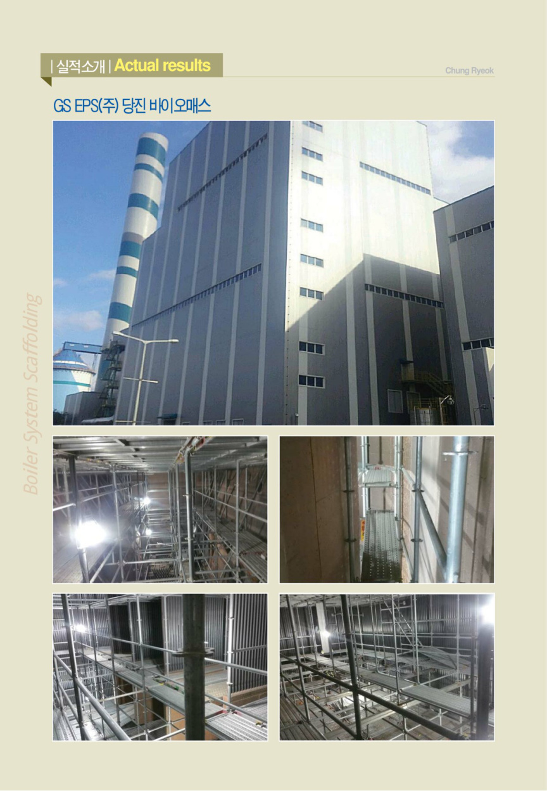
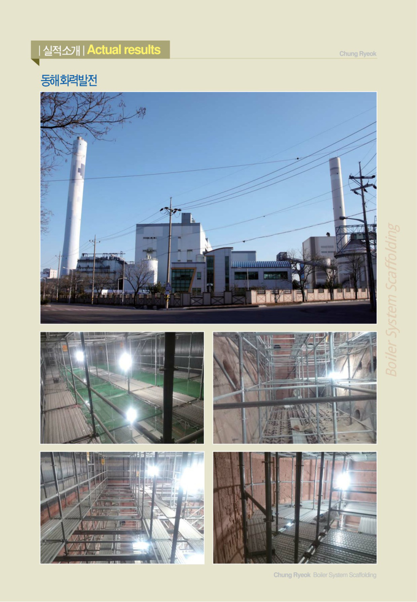
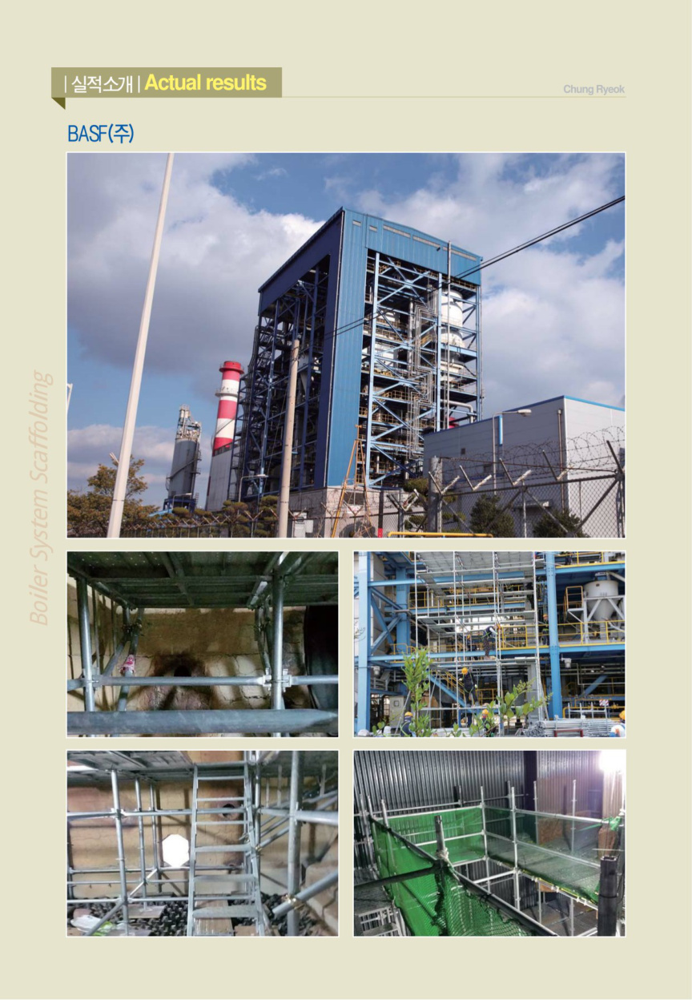
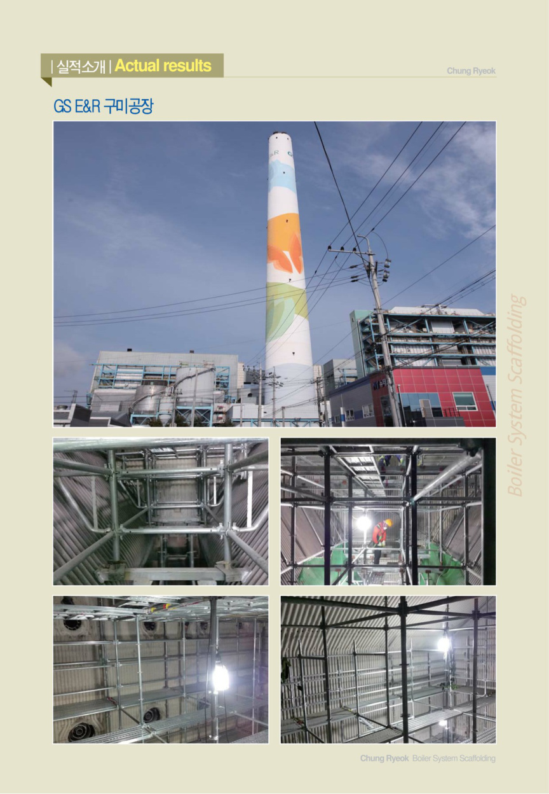
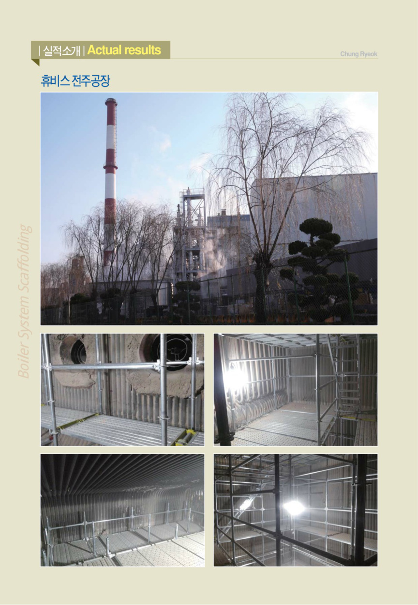
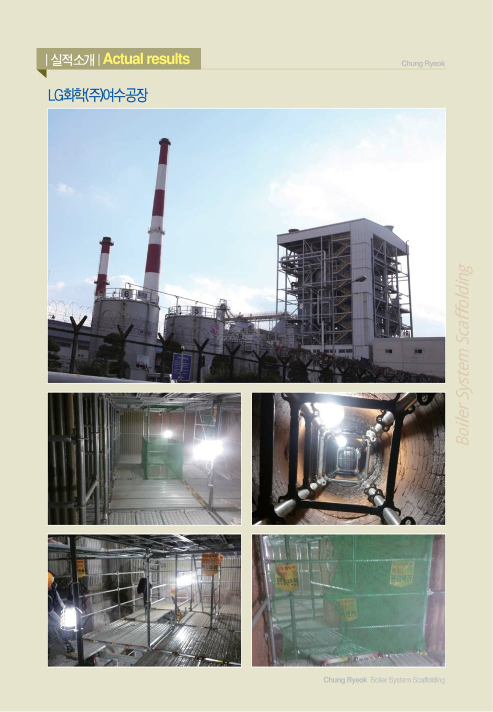

보일러 FURNACE·CYCLONE 내부 특수구간부터 발전소 외부 설비·배관·구조물 및 정비구간까지. 축적된 시공실적과 현장 대응력을 바탕으로 안전·품질·공정을 책임집니다.
㈜충력은 보일러 내부 시스템비계 분야에서 축적한 경험을 기반으로 발전소 외부 설비, 배관구간, 구조물 및 각종 정비구간까지 대응합니다. 설비 형상과 높이, 작업동선, 타 공정 간섭, 정비 일정을 종합적으로 검토해 현장 여건에 맞는 시공계획을 수립합니다.
발주처와 원청사가 협력업체 검토 시 확인할 수 있도록 면허, 인증, 협력업체 등록, 특허기술을 갖추고 있습니다.
보일러 내부 특수구간부터 외부 설비까지 작업 목적과 현장조건에 맞는 작업발판을 구축합니다.
FURNACE, CYCLONE 내부 점검·보수·정비 작업을 위한 시스템비계 설치 및 해체.
발전소 외부 고소설비, 배관 주변, 구조물 및 복잡한 설비구간의 작업발판 구축.
정비 일정과 타 공정의 작업순서를 고려한 설치·해체 및 공정 대응.
발전·에너지·화학 플랜트 유지보수와 설비 정비에 필요한 시스템비계 시공.
지명원에 수록된 발전·에너지·화학 플랜트 현장 중 주요 시공사례입니다.









비계 설치·해체 과정의 시공성과 안전성을 높이기 위한 기술개발과 품질·안전 관리체계를 지속적으로 강화합니다.
지명원에는 화력발전소 보일러 내부 관리용 비계와 비계 설치·이송·지지 관련 특허가 수록되어 있습니다. 단순 시공을 넘어 실제 현장의 불편과 위험요인을 개선하기 위한 기술개발을 이어가고 있습니다.
별도 요청 없이 지명원 원본에서 회사현황, 면허·ISO 인증, 특허 및 전체 공사실적을 확인할 수 있습니다.
발전소 보일러 내부·외부 시스템비계 설치공사, 유지보수공사, 정비공사 및 계획예방정비공사 관련 검토 시 ㈜충력에 참여 기회를 주시면 현장조건을 확인하여 신속하게 대응하겠습니다.